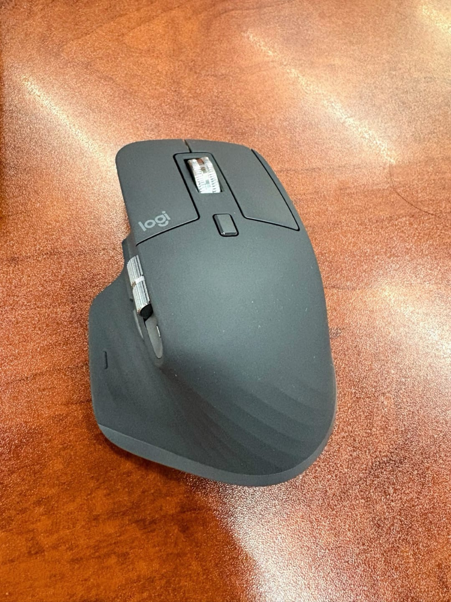

罗技 MX Master 3S 无线鼠标

MX Master 3S 延续经典人体工学模具，升级 8000 DPI 传感器与约 -90% 降噪的静音微动。MagSpeed 电磁滚轮一秒千行、精准逐格两相宜，支持蓝牙与 Bolt 接收器三设备切换，Flow 跨屏传输文件，是办公效率鼠标的标杆。
客观评测
MX Master 3S 是罗技生产力鼠标的旗舰：MagSpeed 电磁滚轮可在疾速滚动与逐格精确间自适应切换，8000 DPI 传感器可在多种表面工作，静音微动将点击噪音降低约 90%。连接支持蓝牙与 Logi Bolt 接收器，Easy-Switch 支持三台设备一键切换，配合 Logi Flow 可跨屏移动光标并传输文件。USB-C 快充 1 分钟约可使用 3 小时，满电续航约 70 天。约 141 克的右手人体工学模具更适合中大手型，左手用户不适配。
主观点评
用过它就回不去普通鼠标：滚轮一拨飞过几百页表格，需要逐格时又自动锁止，Excel 与长文档工作流被彻底重塑。静音点击在开放办公室是礼貌，Flow 跨屏更是双电脑桌搭的无缝体验。它贵，但作为每天握八小时以上的工具，摊到每一天的成本其实很低。前提是你用右手、且手不太小。
优点与不足
- 电磁滚轮体验丝滑，长文档浏览效率倍增
- 静音微动不扰人，图书馆会议室友好
- 三设备切换加 Flow 跨屏，多机党福音
- 约八百元定价不便宜
- 右手专用模具，左手用户无缘
- 大鼠便携性一般，不适合小手
参数规格
| 传感器 | 约 8000 DPI 高精度传感器 |
|---|---|
| 滚轮 | MagSpeed 电磁滚轮，疾速/逐格双模式 |
| 按键 | 7 键可编程，静音微动（约 -90% 点击噪音） |
| 连接 | 蓝牙低功耗 + Logi Bolt USB 接收器 |
| 多设备 | Easy-Switch 三设备一键切换 |
| 续航 | 充满约 70 天，快充 1 分钟约用 3 小时 |
| 充电 | USB-C |
| 跨屏 | Flow 跨电脑传输文件与光标 |
| 重量 | 约 141g |
| 系统 | Windows、macOS、Linux、iPadOS |
| 按键侧键 | 拇指滚轮与前进后退键 |
| 人体工学 | 右手人体工学曲面设计 |